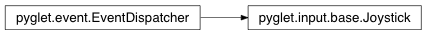

Joystick Class¶
-
class
Joystick(device)¶ High-level interface for joystick-like devices. This includes analogue and digital joysticks, gamepads, game controllers, and possibly even steering wheels and other input devices. There is unfortunately no way to distinguish between these different device types.
To use a joystick, first call open, then in your game loop examine the values of x, y, and so on. These values are normalized to the range [-1.0, 1.0].
To receive events when the value of an axis changes, attach an on_joyaxis_motion event handler to the joystick. The Joystick instance, axis name, and current value are passed as parameters to this event.
To handle button events, you should attach on_joybutton_press and on_joy_button_release event handlers to the joystick. Both the Joystick instance and the index of the changed button are passed as parameters to these events.
Alternately, you may attach event handlers to each individual button in button_controls to receive on_press or on_release events.
To use the hat switch, attach an on_joyhat_motion event handler to the joystick. The handler will be called with both the hat_x and hat_y values whenever the value of the hat switch changes.
The device name can be queried to get the name of the joystick.
Variables: - device – The underlying device used by this joystick interface.
- x – Current X (horizontal) value ranging from -1.0 (left) to 1.0 (right).
- y – Current y (vertical) value ranging from -1.0 (top) to 1.0 (bottom).
- z – Current Z value ranging from -1.0 to 1.0. On joysticks the Z value is usually the throttle control. On game controllers the Z value is usually the secondary thumb vertical axis.
- rx – Current rotational X value ranging from -1.0 to 1.0.
- ry – Current rotational Y value ranging from -1.0 to 1.0.
- rz – Current rotational Z value ranging from -1.0 to 1.0. On joysticks the RZ value is usually the twist of the stick. On game controllers the RZ value is usually the secondary thumb horizontal axis.
- hat_x – Current hat (POV) horizontal position; one of -1 (left), 0 (centered) or 1 (right).
- hat_y – Current hat (POV) vertical position; one of -1 (bottom), 0 (centered) or 1 (top).
- buttons – List of boolean values representing current states of the buttons.
These are in order, so that button 1 has value at
buttons[0], and so on. - x_control – Underlying control for x value, or
Noneif not available. - y_control – Underlying control for y value, or
Noneif not available. - z_control – Underlying control for z value, or
Noneif not available. - rx_control – Underlying control for rx value, or
Noneif not available. - ry_control – Underlying control for ry value, or
Noneif not available. - rz_control – Underlying control for rz value, or
Noneif not available. - hat_x_control – Underlying control for hat_x value, or
Noneif not available. - hat_y_control – Underlying control for hat_y value, or
Noneif not available. - button_controls – Underlying controls for buttons values.
Methods:
Attributes:
Attributes¶
-
Joystick.event_types= [‘on_joyaxis_motion’, ‘on_joybutton_press’, ‘on_joybutton_release’, ‘on_joyhat_motion’]¶
Inherited members¶
Methods
Joystick.register_event_type(name)Register an event type with the dispatcher.
Registering event types allows the dispatcher to validate event handler names as they are attached, and to search attached objects for suitable handlers.
Parameters: name (str) – Name of the event to register.